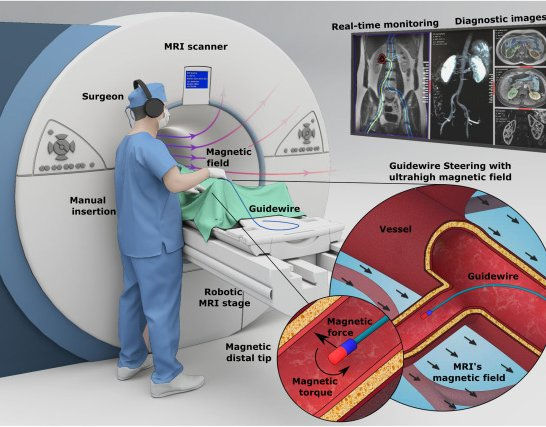

Magnetic navigation · mpi_tiryaki2023
7-T MRI steering
Ultrahigh-field magnetic guidewire steering inside a 7-T MRI scanner with a robotic MRI stage

1 / 3


- Family
- Magnetic navigation (magnetic-navigation)
- Devices
- own guidewire: MRI-compatible glass fibre-optic rod core with NdFeB tip magnets (1 mm x 1 mm cylinders) in parallel, perpendicular, antiparallel or dual configurations; 900 um Teflon supporting catheter (tiryaki2023_magnetic Results)
- Degrees of freedom
- robotic MRI stage: x, y and yaw; manual insertion and base twist (tiryaki2023_magnetic Results, Fig. 5A)
- Push
- Magnetic
- Twist
- Field direction
- Tested up to
- Phantom
- Sim-to-real
- None found — No simulation-trained controller found for this robot.
Testing
- Highest level
- Phantom
- What was tested
- 3D glass vascular models with physiological flow (renal artery, aortic arch at 100 mL per beat, CCA, MCAs), access through a Teflon port 40 cm from the target (tiryaki2023_magnetic Fig. 7); 2D obstacle tasks with three targets (Fig. 5); ex vivo porcine kidney renal cavity under real-time MRI, guidewire through the urinary tract, not a vessel (Fig. 8)
- Key numbers
- 7 T; fringe gradients up to 20 T/m at the bore entrance; tip workspace 161 deg at 7 T (Fig. 3C); antiparallel magnet rotates up to 164 deg; platform rotation up to 48 deg needed in 2D tasks (tiryaki2023_magnetic Results)
Mechanism
- Push (translation)
- magnetic (tip steering by MRI main-field torque and fringe-field gradient); insertion by hand (tiryaki2023_magnetic Fig. 5A, Fig. 7)
- Twist (rotation)
- motorized stage moves and rotates the phantom relative to the main field; manual base twist (tiryaki2023_magnetic Results)
- Device range
- N.R.
- Target anatomy
- endovascular under MRI: renal artery, type 1 aortic arch, common carotid and middle cerebral artery glass models (tiryaki2023_magnetic Fig. 7); ex vivo porcine kidney renal cavity (non-vascular, Fig. 8)
Sensing and interface
- Force sensing
- none during navigation (MRI-conditioned force sensor used only to calibrate magnet force)
- Leader and haptics
- no: joystick / remote controller for the stage (tiryaki2023_magnetic Results)
- Imaging
- MRI (real-time 1-Hz FISP in the kidney test; tip seen as a 37 x 29 mm susceptibility artefact) (tiryaki2023_magnetic Fig. 8)
- Sterility
- N.R.
Size
- Footprint (mm)
- N.R. (inside a 7-T preclinical MRI bore)
- Mass (kg)
- N.R.
Simulation
- Simulation model
- Cosserat rod model (20 segments) with a UHF magnetization model, used for guidewire design (tiryaki2023_magnetic Methods)
- Sim-trained controller
- none found (model used for design, no trained controller)
Versions
- Lineage
- single (Sci. Adv. 2023)
Sources
- Magnetic guidewire steering at ultrahigh magnetic fields · Science Advances, 2023 · doi:10.1126/sciadv.adg6438 [tiryaki2023_magnetic]
- Robotically steerable guidewires—Current trends and future directions · Science Robotics, 2025 · doi:10.1126/scirobotics.adt7461 [konda2025_robotically]
Notes
- Notes
- Family: magnetic. konda2025 Table 2 row 4. The guidewire is advanced by hand; motor control is the stage that moves the phantom in the field. No photo of the stage in the paper body (fig. S7 in the supplement, not opened: manual list).
This record
- Read level
- full — full (PMC full text)
- Picture
- tiryaki2023_magnetic Fig. 1(A) (PMC10132757 figure file sciadv.adg6438-f1.jpg) ↗ — licence: CC BY 4.0; grade C
- Picture changes
- cropped panel A from the 785 px PMC figure; panel letter removed by crop; none upscaled
- Found by
- actuated-tip: Search of actuated-tip and magnetic devices.
- Data
- JSON · YAML:
records/robots/mpi_tiryaki2023.yaml - Correction
- Suggest a correction [repository not created yet]